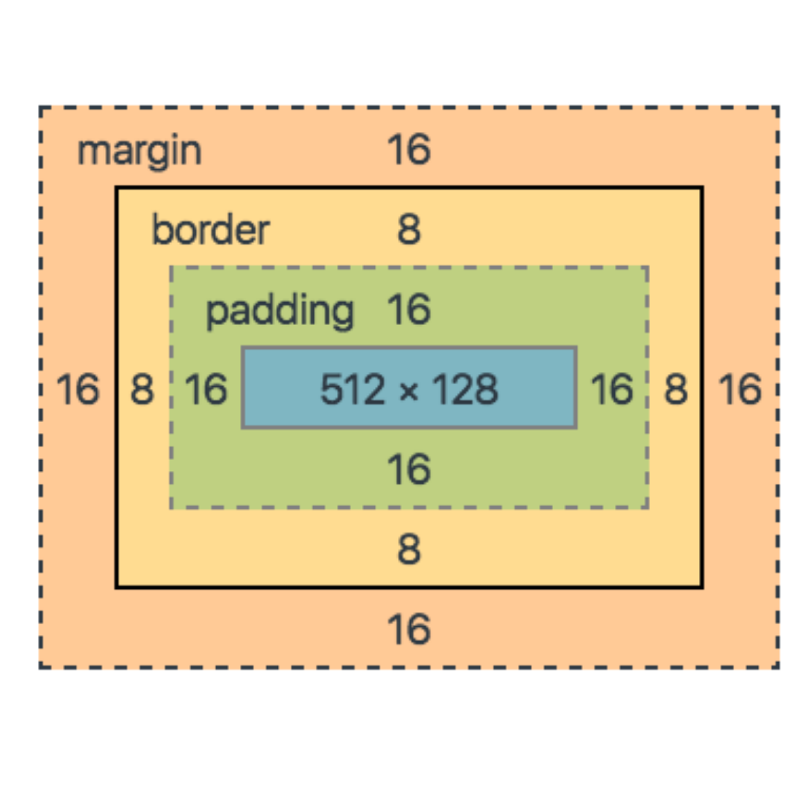

CSS stands for Cascading Style Sheets.
It defines how elements are displayed on a page.
CSS is stored in an external file, usually called "style.css".
In order for it to work, it has to be linked on all HTML pages using the link tag with an href to the file.
The link tag goes in the head element so that the user cannot see it.
The Box Model:
All HTML elements can be essentially viewed as a box.
The Box Model consists of four different levels:
Content - What is viewed by the user.
I.e. Images or text.
Padding - Clears an area around the
content and border. Imagine the padding in a coat when styling this.
Border - This can be seen by the user,
it is styled in the CSS file.
The margin - The space outside the box,
which is inbetween each element.
Box sizing:
Controls whether the padding and border should be included in the overall size of the element.
Box-size: border-box; tells browser to include padding and border in overall size of element.
Content-box; default value. Keeps padding and border out of total size of element.
THE DISPLAY PROPERTY:
The display property is the most important CSS styling rule to control the layout of the website.
Each element has a default display which is either:
Block - takes up the full width
available. e.g. Div, footers, p tags, sections.
Inline - takes up only the amount of
space that is needed and does not start a new line. e.g. Span.
Other display properties you can use are:
'Flex' - Displays an element as a
block-level flex container.
'inline-block' - Displays an element as
an inline-level block container.
The element itself is formatted as an inline element, but you can apply height and width values.
'inline-flex' - Displays an element as
an inline-level flex container.
'none' - Removes element completely.
This is useful for javascript functions.
Other Useful CSS:
Order of css rules is:
!important
ID selector (#)
Class selector (.)
Type selector
Css is read from top to bottom by the browser.
Units of measurements:
Pixels
Em
Rem
Percentage
Vw (viewport width) eg. Height: 10vw; box will have height of 10% of window.
Vh (viewport height) - relative to height of viewport which is the browser viewport size.
Centering:
Places content centered horizontally or vertically on a page.
To centre horizontally - set value to auto for left and right margin.
To centre inline-block elements
- add text align property to the parent of the inline block.
For absolute positioned elements -
set the left and right property as well as the auto property for margin-left and margin-right.
For vertical centering -
transform:translate(y)(-50%); - will move the element on the y-axis.
The transition property:
The transition property allows you to trigger a style change to an element.
The most popular one is :hover.
This sets a style to the element when the user hovers over the particular element.